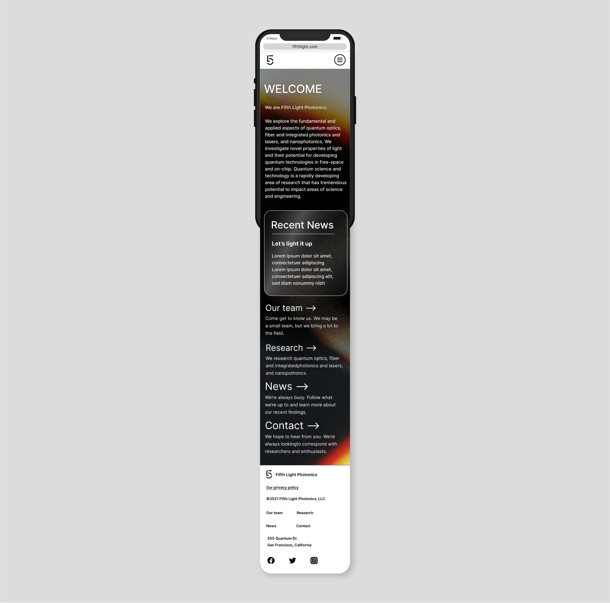

Fifth Light Photonics is a brand design for a photonics lab in San Francisco, California. The visuals play with the concept of light refractions to create a distinct identity that stands out in the STEM field. The design aims to communicate the innovative and fascinating nature of photonics to popularize the concept and gain excitement with the general public.
